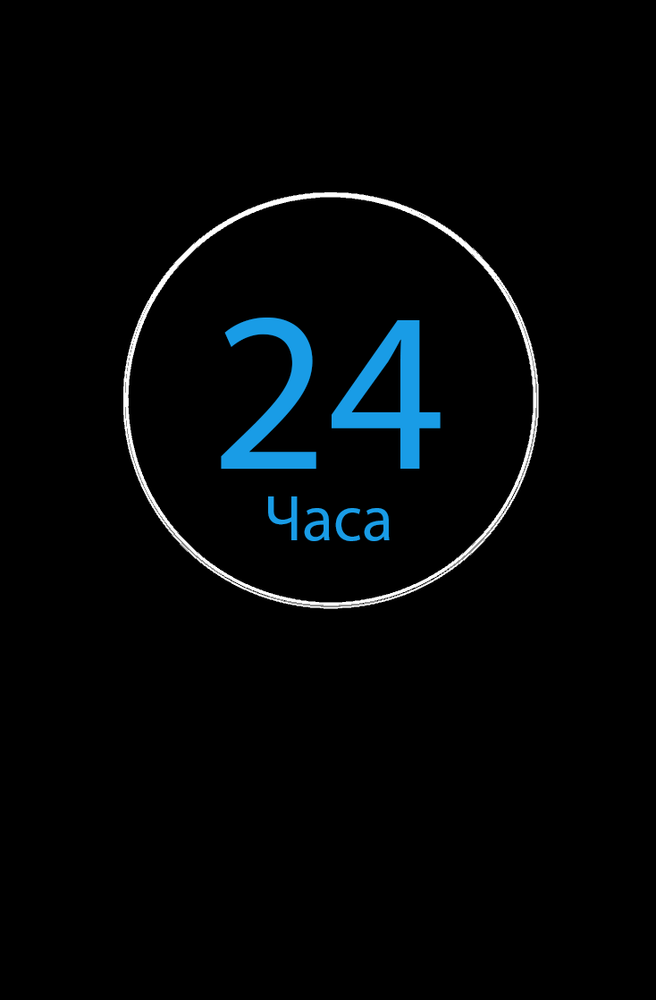
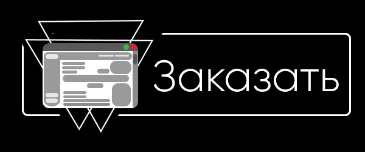

Созание сайта и получени его на руки
легко.

Делаем все надежно и удобно для вас.
Быстро свяжемся с вами и выполним ваш заказ.

Сделаем все красиво и эффектно.

© 2017 Style-Top. Создан в домашних условиях, при помощи программы на слабом PC
Если вы заметили сходство с каким либо сайтом, то да, я брал в пример дизайн одного из сайтов.